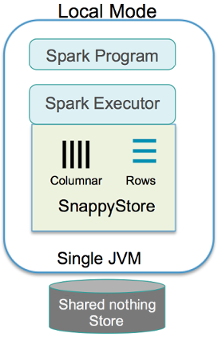

Overview
In this section, we discuss the various modes available for collocation of related data and computation.
You can run the SnappyData store in the following modes:
-
Local Mode: Used mainly for development, where the client application, the executors, and data store are all running in the same JVM
-
Embedded SnappyData Store Mode: The Spark computations and in-memory data store run collocated in the same JVM
-
SnappyData Smart Connector Mode: Allows you to work with the SnappyData store cluster from any compatible Spark distribution
Local Mode
In this mode, you can execute all the components (client application, executors, and data store) locally in the application's JVM. It is the simplest way to start testing and using SnappyData, as you do not require a cluster, and the executor threads are launched locally for processing.
Key Points
-
No cluster required
-
Launch Single JVM (Single-node Cluster)
-
Launches executor threads locally for processing
-
Embeds the SnappyData in-memory store in-process
-
For development purposes only

Example: Using the Local mode for developing SnappyData programs
You can use an IDE of your choice, and provide the below dependency to get SnappyData binaries:
Example: Maven dependency
<!-- https://mvnrepository.com/artifact/io.snappydata/snappydata-cluster_2.11 -->
<dependency>
<groupId>io.snappydata</groupId>
<artifactId>snappydata-cluster_2.11</artifactId>
<version>0.9</version>
</dependency>
Example: SBT dependency
// https://mvnrepository.com/artifact/io.snappydata/snappydata-cluster_2.11
libraryDependencies += "io.snappydata" % "snappydata-cluster_2.11" % "0.9"
Create SnappySession: To start SnappyData store you need to create a SnappySession in your program
val spark: SparkSession = SparkSession
.builder
.appName("SparkApp")
.master("local[*]")
.getOrCreate
val snappy = new SnappySession(spark.sparkContext)
Example: Launch Apache Spark shell and provide SnappyData dependency as a Spark package:
If you already have Spark2.0 installed in your local machine you can directly use --packages option to download the SnappyData binaries.
./bin/spark-shell --packages "SnappyDataInc:snappydata:0.9-s_2.11"
Embedded SnappyData Store Mode
In this mode, the Spark computations and in-memory data store run collocated in the same JVM. This is our out of the box configuration and suitable for most SnappyData real-time production environments. You launch SnappyData servers to bootstrap any data from disk, replicas or from external data sources. Spark executors are dynamically launched when the first Spark Job arrives.
Some of the advantages of this mode are:
-
High performance: All your Spark applications access the table data locally, in-process. The query engine accesses all the data locally by reference and avoids copying (which can be very expensive when working with large volumes).
-
Driver High Availability: When Spark jobs are submitted, they can now run in an HA configuration. The submitted job becomes visible to a redundant “lead” node that prevents the executors to go down when the Spark driver fails. Any submitted Spark job continues to run as long as there is at least one “lead” node running.
-
Less complex: There is only a single cluster to start, monitor, debug and tune.

In this mode, one can write Spark programs using jobs. For more details, refer to the SnappyData Jobs section.
Example: Submit a Spark Job to the SnappyData Cluster
bin/snappy-job.sh submit --app-name JsonApp --class org.apache.spark.examples.snappydata.WorkingWithJson --app-jar examples/jars/quickstart.jar --lead [leadHost:port] --conf json_resource_folder=../../quickstart/src/main/resources
Also, you can use SnappySQL to create and query tables.
You can either start SnappyData members using the snappy-start-all.sh script or you can start them individually.
Having the Spark computation embedded in the same JVM allows us to do a number of optimization at query planning level. For example:
-
If the join expression matches the partitioning scheme of tables, we do a partition to partition join instead of a shuffle based join. Moreover, if two tables are collocated (while defining the tables) we can avoid costly data movement.
-
For replicated tables, which we know are present in all the data nodes, a simple local join( local look up) is done instead of a broadcast join.
-
Similarly inserts to tables groups rows according to table partitioning keys, and route to the JVM hosting the partition. This results in higher ingestion rate.
SnappyData Smart Connector Mode
In certain cases, Spark applications run as independent sets of processes on a cluster, coordinated by the SparkContext object in your main program (called the driver program).
Specifically, to run on a cluster, the SparkContext can connect to several types of cluster managers (either Spark’s own standalone cluster manager, Mesos or YARN), which allocate resources across applications. Once connected, Spark acquires executors on nodes in the cluster, which are processes that run computations and store data for your application. Next, it sends your application code (defined by JAR or Python files passed to SparkContext) to the executors. Finally, SparkContext sends tasks to the executors to run.

Key Points:
-
Can work with SnappyData store from any compatible Spark distribution
-
Spark Cluster executes in its own independent JVM processes
-
The Spark cluster connects to SnappyData as a Spark Data source
-
Supports any of the Spark supported resource managers (for example, Spark Standalone Manager, YARN or Mesos)
Some of the advantages of this mode are:
Performance: When Spark partitions store data in column tables, the connector automatically attempts to localize the partitions into SnappyData store buckets on the local node. The connector uses the same column store format as well as compression techniques in Spark avoiding all data formatting related inefficiencies or unnecessary serialization costs. This is the fastest way to ingest data when Spark and the cluster are operating as independent clusters.
When storing to Row tables or when the partitioning in Spark is different than the partitioning configured on the table, data batches could be shuffled across nodes. Whenever Spark applications are writing to SnappyData tables, the data is always batched for the highest possible throughput.
When queries are executed, while the entire query planning and execution is coordinated by the Spark engine (Catalyst), the smart connector still carries out a number of optimizations, which are listed below:
-
Route jobs to same machines as SnappyData data nodes if the executor nodes are co-hosted on the same machines as the data nodes. Job for each partition tries to fetch only from same machine data store where possible.
-
Collocated joins: If the underlying tables are collocated partition-wise, and executor nodes are co-hosting SnappyData data nodes, then the column batches are fetched from local machines and the join itself is partition-wise and does not require any exchange.
-
Optimized column batch inserts like in the Embedded mode with job routing to same machines as data stores if possible.
Example: Launch a Spark local mode cluster and uses Smart Connector to access SnappyData cluster
Step 1: Start the SnappyData cluster:
You can either start SnappyData members using the _snappy_start_all_ script or you can start them individually.
# start members using the ssh scripts
$ sbin/snappy-start-all.sh
# start members individually
$ bin/snappy locator start -dir=/node-a/locator1
$ bin/snappy server start -dir=/node-b/server1 -locators:localhost:10334
bin/snappy leader start -dir=/node-c/lead1 -locators:localhost:10334
Step 2: Launch the Apache Spark program
In the Local mode
./bin/spark-shell --master local[*] --conf spark.snappydata.connection=localhost:1527 --packages "SnappyDataInc:snappydata:0.9-s_2.11"
Note
-
The
spark.snappydata.connectionproperty points to the locator of a running SnappyData cluster. Its value is a combination of locator host and JDBC client port on which the locator listens for connections (default 1527). -
In the Smart Connector mode, all
snappydata.*SQL configuration properties should be prefixed withspark. For example,spark.snappydata.column.batchSize.
This opens a Scala Shell. Create a SnappySession to interact with the SnappyData store.
// Create a SnappySession to work with SnappyData store
$scala > val snSession = new SnappySession(spark.sparkContext)
Using external cluster manager
./bin/spark-submit --class somePackage.someClass --master spark://localhost:7077 --conf spark.snappydata.connection=localhost:1527 --packages "SnappyDataInc:snappydata:0.9-s_2.11"
The code example for writing a Smart Connector application program is located in SmartConnectorExample